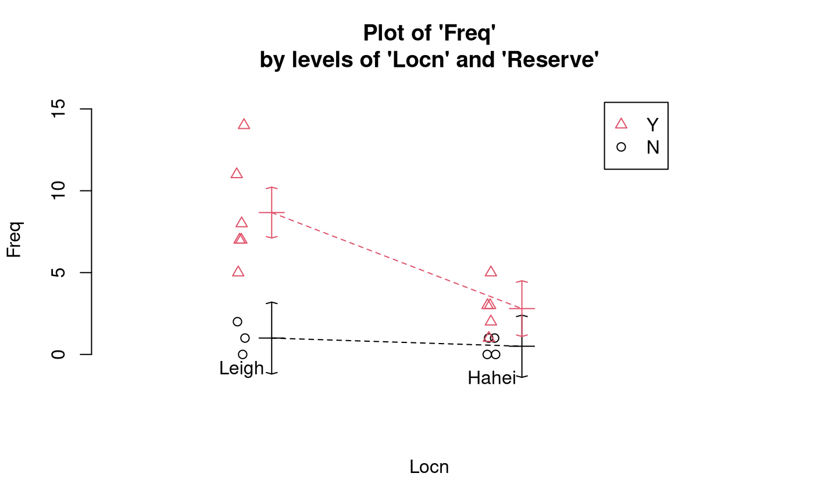
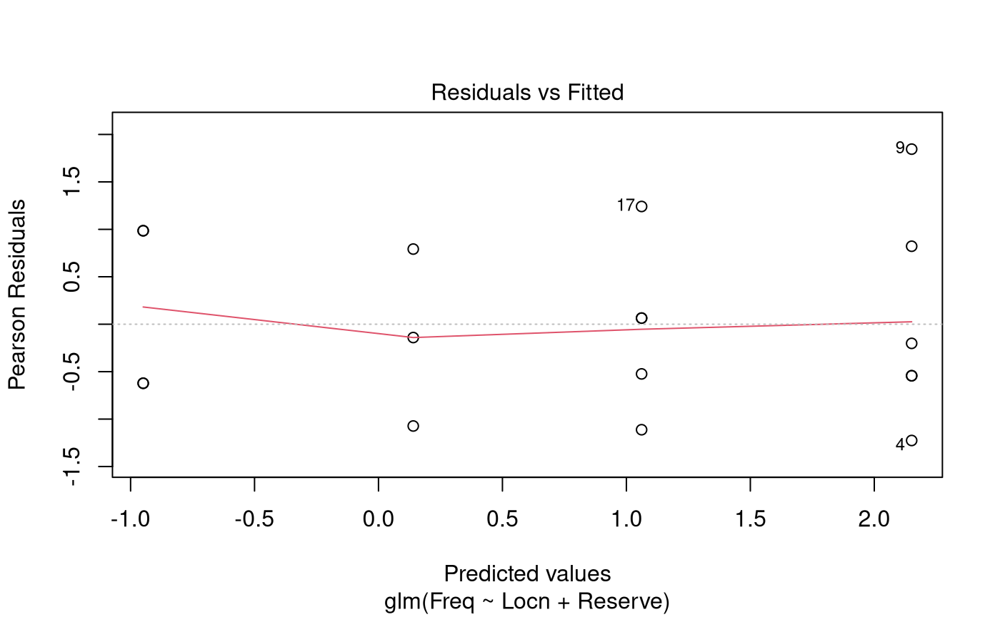

Case Study 14.2: Snapper counts in and around marine reserves
Source:vignettes/articles/CS14_2.Rmd
CS14_2.RmdProblem
Baited underwater video (BUV) is an established tool for counting fish such as snapper.
BUV was used at two locations, Leigh and Hahei. Each location has a marine reserve. The BUV was deployed at sites inside the marine reserve, and at sites just outside the reserve. BUV was used at a total of 18 sites.
The variables of interest were:
-
Locn: A two-level factor which describes the BUV’s location.- It has the levels “Leigh” and “Hahei”.
-
Reserve: A two-level factor which describes whether the BUV’s is in a marine reserve.- It has the levels “N” and “Y”.
-
Freq: The number of snapped counted by the BUV.
Question of Interest
It was of interest to explore the relative count of snapper with regard to location and reservation status.
Read in and Inspect the Data
Snap.df = read.table("SnapperCROPvsHAHEI.txt", header = TRUE)
interactionPlots(Freq ~ Locn * Reserve, data = Snap.df, col.width = 0)
In Leigh, it seems that there is a higher frequency of snapper counted in a marine reserve compared to a non-reserve area. In Hahei, it seems that there is little difference in the frequency of snapper counted in a marine reserve compared to a non-reserve area. However, the interaction plot does indicate that the multiplicative effect of reserve could be similar at the two locations (i.e., no interaction).
Model Building and Check Assumptions
##
## Call:
## glm(formula = Freq ~ Locn * Reserve, family = poisson, data = Snap.df)
##
## Coefficients:
## Estimate Std. Error z value Pr(>|z|)
## (Intercept) -0.6931 0.7071 -0.980 0.3270
## LocnLeigh 0.6931 0.9129 0.759 0.4477
## ReserveY 1.7228 0.7559 2.279 0.0227 *
## LocnLeigh:ReserveY 0.4367 0.9612 0.454 0.6496
## ---
## Signif. codes: 0 '***' 0.001 '**' 0.01 '*' 0.05 '.' 0.1 ' ' 1
##
## (Dispersion parameter for poisson family taken to be 1)
##
## Null deviance: 70.453 on 17 degrees of freedom
## Residual deviance: 14.678 on 14 degrees of freedom
## AIC: 69.143
##
## Number of Fisher Scoring iterations: 5
1 - pchisq(14.678, 14)## [1] 0.4005141
anova(Snap.glm, test = "Chisq")## Analysis of Deviance Table
##
## Model: poisson, link: log
##
## Response: Freq
##
## Terms added sequentially (first to last)
##
##
## Df Deviance Resid. Df Resid. Dev Pr(>Chi)
## NULL 17 70.453
## Locn 1 22.656 16 47.798 1.938e-06 ***
## Reserve 1 32.919 15 14.879 9.609e-09 ***
## Locn:Reserve 1 0.201 14 14.678 0.6542
## ---
## Signif. codes: 0 '***' 0.001 '**' 0.01 '*' 0.05 '.' 0.1 ' ' 1
Snap2.glm = glm(Freq ~ Locn + Reserve, family = poisson, data = Snap.df)
anova(Snap2.glm, test = "Chisq")## Analysis of Deviance Table
##
## Model: poisson, link: log
##
## Response: Freq
##
## Terms added sequentially (first to last)
##
##
## Df Deviance Resid. Df Resid. Dev Pr(>Chi)
## NULL 17 70.453
## Locn 1 22.656 16 47.798 1.938e-06 ***
## Reserve 1 32.919 15 14.879 9.609e-09 ***
## ---
## Signif. codes: 0 '***' 0.001 '**' 0.01 '*' 0.05 '.' 0.1 ' ' 1
summary(Snap2.glm)##
## Call:
## glm(formula = Freq ~ Locn + Reserve, family = poisson, data = Snap.df)
##
## Coefficients:
## Estimate Std. Error z value Pr(>|z|)
## (Intercept) -0.9491 0.4884 -1.943 0.051990 .
## LocnLeigh 1.0894 0.2845 3.829 0.000128 ***
## ReserveY 2.0105 0.4646 4.328 1.51e-05 ***
## ---
## Signif. codes: 0 '***' 0.001 '**' 0.01 '*' 0.05 '.' 0.1 ' ' 1
##
## (Dispersion parameter for poisson family taken to be 1)
##
## Null deviance: 70.453 on 17 degrees of freedom
## Residual deviance: 14.879 on 15 degrees of freedom
## AIC: 67.344
##
## Number of Fisher Scoring iterations: 5
plot(Snap2.glm, which = 1)
## Waiting for profiling to be done...## 2.5 % 97.5 %
## (Intercept) 0.1298697 0.9105143
## LocnLeigh 1.7443515 5.3626745
## ReserveY 3.3224830 21.3481546Methods and Assumption Checks
As the response variable, Freq, is a count, we have
fitted a generalised linear model with a Poisson response distribution.
We have two expanatory factors: Locn and
Reserve. We initially fitted an interaction between reserve
and location. The interaction term was not significant
(-value
= 0.65) so the model was refitted with main effects only. Both factors
were significant so were retained for the final model.
All assumptions were satisfied. There was no evidence of overdispersion, so we can trust the results from the Poisson model (-value = 0.40).
For our final model, we assume that the snapper count for observation is Poisson with mean , where and where and are dummy variables which take the value 1 if observation is respectively from Leigh and from a marine reserve, otherwise they are 0.
Executive Summary
It was of interest to explore the relative count of snapper with regard to location and reserve status.
We conclude that the expected count of snapper inside a marine reserve is between 3.3 and 21.3 times that outside of the reserve.
Additionally, the expected count of snapper in Leigh is between 1.7 and 5.4 times the expected count in Hahei.